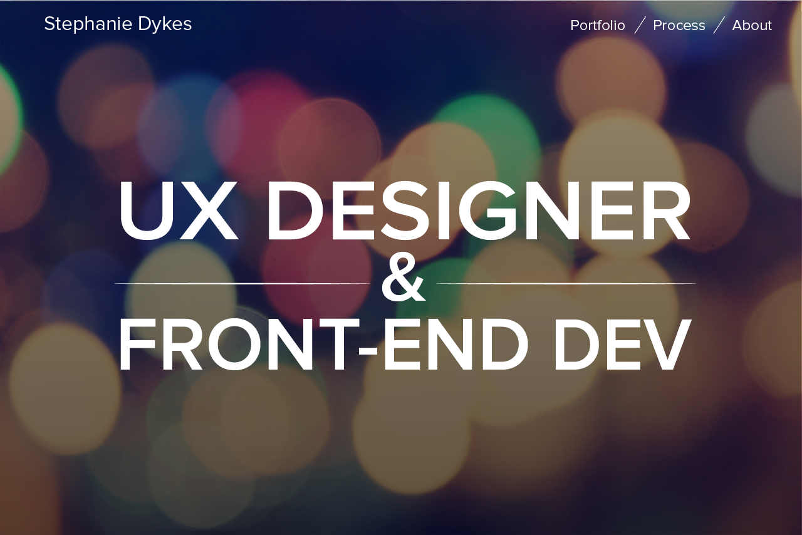

Overview
This site has undergone several iterations over the course of my education. Initially, it was merely thrown
together in my 2nd year as a means to show my gave development experience. It was very minimal, without
much visual or UX design consideration. As my knowledge and interests expanded throughout the years, and as the needs of my
portfolio changed, I changed the design. The site you are using now is the most recent iteration, but definitely not the last.

Challenges
REDESIGNING FOR MORE IN-DEPTH UX STORYTELLING
My most recent change to the site has been redesigning portfolio item pages, such as this one, to tell more about my process. I wanted to go more in-depth about the challenges I faced in each project and how I solved them. This decision came from an exploration of how I could further improve my portfolio, as well as feedback from various potential employers and peers.
My first step in this process was to look at good examples of successful portfolios and to analyze how they present their ideas. From this, I realized that I wanted to add a wealth of information to my pages, I needed to make them easily scannable and well organized. From here, I broke down the common steps and information I wanted to cover, and made clear sections and subsection headers for each page.
I also realized through my discovery process that many other portfolio websites are not afraid of long pages with many static images. Users can choose to scroll at their leisure, and may or may not read all of what is on a page. In the event of skimming, images quickly give a good idea of the nature of a project. Realizing that they are better displayed prominently than hidden in a slideshow, I adjusted the layout of my new site design accordingly.
INCLUDING CODING AND DESIGN PROJECTS
A problem I faced during the last iteration of my site was an issue of choice: am I a coder, or a designer? My answer is both. But we often hear that your portfolio site should not try to be too many things at once. A good site is focused and curated, with a clear goal in mind. I was faced with a choice or either choosing one route or making a site for both.
This led me to implement filtering. For users to see the range of different projects I do, but not be burdened by results they may not be interested in, this was an obvious choice.
Technical development was achieved by using Isotope to dynamically hide and adjust content. I considered both checkbox and radio button functonality for the filter, but due to the low number of filter commands (and percieved higher ease of use), I chose radio buttons. Unfortunately, the implemented UI for this is still a work in progress, but the intended design can be shown in mockup below.
Process
DISCOVERY
As somewhat touched on in the Challenges section, I always start my discovery process with looking at solid examples of other work. This helps to reveal new types of solutions, and ground my designs in existing conventions. For the initial design, I found that I favored simple websites with a consistent navigation that was always clear and available. A dedicated portfolio page, but with options for filtering multi-disciplinary portfolio items, was something I admired about a few sites I found, so I chose to take those concepts and adapt them to fit the kind of site my work needs. Finally, I discovered that the best portfolio websites often gave a taste of the personality of their author, with a strong landing page or fun "About" section.
SKETCHES / WIREFRAMES
After research, I sketched the layout options. I experimented with several options for the first page, as well as exploring a long scrolling site versus a multi-paged navigation. I ultimately chose the multi-paged option for easier use, as I believe it does slightly better in terms of user experience than the long scrolling sites.
MOCKUPS & DEVELOPMENT
I created mockups in Illustrator to further explore what I thought worked best, and to get a better idea of the layout I thought I would choose. Once I had these and had chosen a final direction, I began development.
This site was and is developed 100% by me, excluding the tools and libraries used. The technologies used include HTML, CSS, Javascript (for slideshows), JQuery, Isotope (for filtering and animating project links), Boostrap, and Lightbox (for displaying enlarged images).
PREVIOUS ITERATIONS
This iteration of the site is my third. The original version was thrown together almost thoughtlessly with very little research beforehand. It was plain white and segmented rather unintuitively. The second iteration involved some research, and attempted infusion with my personality, taking a light-hearted and fun take on the visual aspect. The layout was improved signifigantly, but as my design sensibilities grew, I soon realized the visual style looked rather dated. Finally, the most recent iteration came about with the goal of a modern look and feel. I kept the old layout, but focused on the overall style of the site, adding a few useful features such as the portfolio filtering and animations.
Reflection
I am currently focusing on implementing the new process-focused layout, in order to better showcase my projects. I am also trying my best to add new projects as they come out, though school often delays this. Once the site's content is fully updated, I will likely next tackle my About page in order to make it more fun and eye-catching.


{kind=link}
{kind=link}